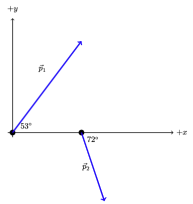

C3.3 Problems#
Problem C3.1
A 0.50 kg particle is intially traveling with a velocity of \(\vec{v} = (450~\textrm{m/s})\hat{i} + (25~\textrm{m/s})\hat{j} - (275~\textrm{m/s})\hat{k}\). After an interaction, the particle is traveling in the xy-plane with \(z = 0\) and with a speed of 455 m/s in a direction of 23\(^\circ\) clockwise from the -x-axis.
What is the initial momentum of particle?
What is the magnitude of the initial momentum?
What are the x,y, and z momentum components of the particle after the interaction?
What is the change in momemtum of the particle?
Problem C3.2
Consider the two particles shown in the figure.

Let \(p_1 = 675~\textrm{kgm/s}\) and \(p_2 = 485~\textrm{kgm/s}\).
Determine the components of the two momentum vectors.
Write the momentum vectors in a proper vector notation.
If we consider the two particle to be one system, what is the total momentum of the system?
Problem C3.3
A 0.25 kg particle is traveling (in the xy-plane) with an initial velocity (in m/s) of
Sometime later, its velocity (in m/s) is
What are the magnitudes and directions of the:
the initial momentum?
the final momentum?
the change in momentum?
Problem C3.4
Soccer Kick: A soccer player kicks a ball initially at rest with a force of 300.0 N at an angle of 35 degrees above the horizontal. If the contact time between the foot and the ball is 0.020 seconds, calculate the impulse applied to the ball.
# DIY Cell
Problem C3.5
A 0.50 kg particle is subjected to a net force given by \(\vec{F}_{net} = (3.0\textrm{N})\hat{i} + (41~\textrm{N})\hat{j}\) for 2.00 seconds. Calculate the impulse experienced by the particle during this time.
#DIY Cell
Problem C3.6
Air Hockey Collision: On an air hockey table, a 0.20 kg puck moving eastward at 5.0 m/s collides with a stationary 0.10 kg puck. After the collision, the first puck moves westward at 2.0 m/s. Calculate the final velocity of the second puck.
# DIY Cell
Problem C3.7#
Pool Table Collision: On a pool table, a cue-ball (mass 0.17 kg) moving at 2.0 m/s in the east direction collides with a stationary 9-ball (mass 0.16 kg). After the collision, the cue-ball moves at an angle of 30.0 degrees north of east, while the 9-ball moves at an angle of 60.0 degrees south of east. Calculate the final speed of each ball.
# DIY Cell
Problem C3.8#
Particle Collision in a Particle Accelerator
In a high-energy particle accelerator experiment, two protons, P1 and P2, with identical masses of \(1.67 \times 10^{-27}\) kg collides. P2 is accelerated towards towards P1. Initially, P1 is at rest, while P2 is moving with a velocity of 0.90\(c\) (where \(c\) is the speed of light) in the positive x-direction.
They collide head-on and annihilate each other, producing two new particles, A and B.
Particle A moves off at an angle of 60.0 degrees north of the x-axis with a speed of 0.60\(c\). Particle B moves off at an angle of 30.0 degrees south of the x-axis with a speed of 0.70\(c\).
Calculate the total momentum of the system before the collision.
Calculate the total momentum of the system after the collision.
Determine the masses of particles A and B.
Verify whether kinetic energy is conserved in this collision.
#DIY Cell